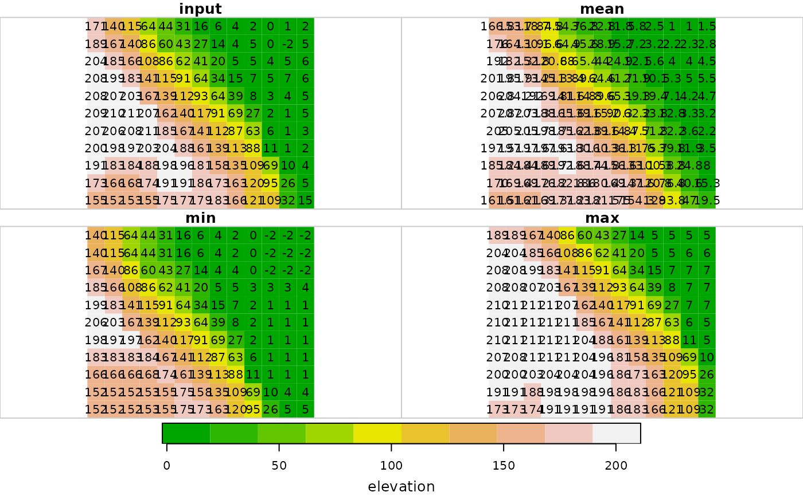

Applies a focal filter with neighborhood size k*k on a raster (class stars), using R code. This function is relatively slow, provided here mainly for testing purposes or for custom using functions which are not provided by focal2.
focal2r(x, w, fun, mask = FALSE, ...)
| x | A raster (class |
|---|---|
| w | Weights matrix defining the neighborhood size around the focal cell, as well as the weights. For example, |
| fun | A function to be applied on each neighborhood, after it has been multiplied by the matrix. The function needs to accepts a vector (of length equal to |
| mask | If |
| ... | Further arguments passed to |
The filtered stars raster
The raster is "padded" with one more row/column of NA values on all sides, so that the neigborhood of the outermost rows and columns is still a complete 3x3 neighborhood. Those rows and columns are removed from the filtered result before returning it.
# \donttest{ # Small example data(dem) dem1 = focal2r(dem, matrix(1,3,3), mean, na.rm = TRUE) dem2 = focal2r(dem, matrix(1,3,3), min, na.rm = TRUE) dem3 = focal2r(dem, matrix(1,3,3), max, na.rm = TRUE) r = c(dem, round(dem1, 1), dem2, dem3, along = 3) r = st_set_dimensions(r, 3, values = c("input", "mean", "min", "max")) plot(r, text_values = TRUE, breaks = "equal", col = terrain.colors(10))#> downsample set to c(0,0,1)# Larger example data(carmel) carmel1 = focal2r(carmel, matrix(1,3,3), mean, na.rm = TRUE, mask = TRUE) carmel2 = focal2r(carmel, matrix(1,9,9), mean, na.rm = TRUE, mask = TRUE) carmel3 = focal2r(carmel, matrix(1,15,15), mean, na.rm = TRUE, mask = TRUE) r = c(carmel, carmel1, carmel2, carmel3, along = 3) r = st_set_dimensions(r, 3, values = c("input", "k=3", "k=9", "k=15")) plot(r, breaks = "equal", col = terrain.colors(100))#> downsample set to c(2,2,1)# }